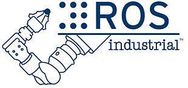
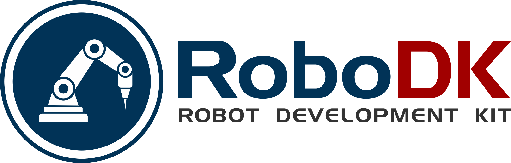
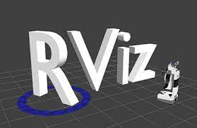
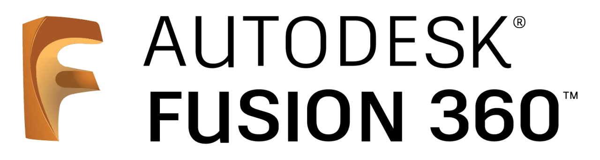
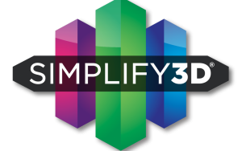
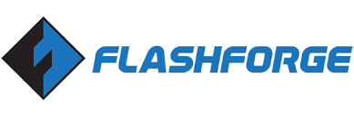

Thomas Lehmann
Highlights
- Robotics software design & development using the Robot Operating System (ROS) (5 years experience):
- System & hardware integration (6 years experience):
-
- Integration of material deposition systems (welding & FDM) and coating systems with industrial robotic arms (hardware driver development);
- Integration of motors, servos, cameras, sensing and measurement equipment with inspection ROV;
- Other various hardware integrations for research and development (cameras, sensing & measurement systems)
- Product development (2 years experience):
- Leadership & project management (10 years experience):
-
- Led the commissioning and installation of an industrial Wire-arc Additive Manufacturing (WAAM) robotic cell
- Supervised senior undergraduate students assisting with software implementation
- Supervised and managed software development, code review and approval
- Supervised graduate students working on their thesis research
- Undergraduate lab teaching assistantships (see CV)
- Robotics & mechatronics research and development (10 years experience):
-
- Peer reviewed research on various robotics and mechatronics topics
- Wire-Arc Metal Additive Manufacturing
- Model-based automated and semi-automated needle steering in soft tissue
I am an experienced robotics and mechatronics engineer having worked on a wide range of medical and industrial engineering research and development projects. In general, I am interested in and passionate about developing and designing custom and complex automation solutions utilizing cutting edge robotics research. This includes using real-time multi-sensor feedback to create intelligent and adaptive robotic and automated systems. I bring this background and passion in systems, mechatronics and software engineering to all my projects.
Portfolio & expertise
Programming languages


Software frameworks, libraries, computing environments & robot programming software
   RobotWebToolsOperating systems

Version control systems

CAD, rapid prototyping, 3D printing
  - Robotics software design, development and hardware integration via the Robot Operating System (ROS)
- Systems design & integration
- Product development
- Control systems engineering
- System identification and modeling
Particularly in the last 5-6 years, I have gained substantial experience in industrial robotics software engineering and development for custom and specialized robotics applications. In order to facilitate software development and hardware integration, I have leveraged the popular robotics software framework and ecosystem ROS.
Below are descriptions of my current and past projects, as well as the skills and expertise I developed working on them.
Design and development of a magnetic ROV for coating inspection
Project Dates: April 2022 - present
Company/organization: Confined Space Robotics (CSR)
Highlights:
- Remotely Operated Vehicle (ROV) designed for remote visual and Dry Film Thickness (DFT) inspection of coatings
- Equipped with magnetic wheels (permanent magnets) for crawling vertical and upside down ferromagnetic surfaces
- Visual inspection is facilitated via a pan-tilt-zoom (PTZ) camera (in-house developed pan-tilt mechanism)
- Coating thickness inspection is facilitated via a deployable DFT measurement probe
- Web-based and device-agnostic user interface (UI) for ROV control
Roles and responsibilities:
- Software lead: Design, development and implementation of the ROS-based software stack from backend (e.g., hardware drivers & interfacing) to behavioral and operational logic to frontend (device-agnostic web-based UI)
- Involvement in all aspects of prototyping and product development
- Hardware integration and driver design and implementation
- Mechanical design of the ROV's chassis, the inspection tool deployment systems, and the PTZ camera
- Electronics and network/communication infrastructure design (ROV-internal and operator-facing devices)
- Assembly, testing and quality control
Being a lead developer and therefore heavily involved in this project was and continues to be a very rewarding and interesting experience. I gained a lot of additional experience in robotics software design, and mechanical and electrical design. I also gained new experience in product development and design, and the many intricacies involved in creating a viable and user-friendly product while at the same time keeping manufacturing and cost constraints in mind.
This project also gave me the opportunity to directly apply my expertise in robotics software design and development gained during work on previous projects, which helped accelerate the development of the system.
Design and Development of a ROS-based Software Stack for Robotic Additive Manufacturing
Project Dates: October 2018 - March 2022
Company/organization: Additive Design and Manufacturing Systems (ADaMS) Lab and InnoTech Alberta
Highlights:
- Ability to take trajectories generated via Mastercam-Aplus (planar and multi-axis builds) and Cura (planar builds, re-configured to work for WAAM)
- Ability to interpret RepRap (planar) and Mastercam-Aplus (planar and multi-axis) gcodes
- Ability to interface and control various types of robot arms and cartesian robots (e.g., 3 or 5-axis CNC systems)
- Ability to incorporate sensing systems for sensor fusion, machine learning and control feedback
- Includes digital twins
- Where other softwares provide only open-loop trajectory execution (Robotmaster, Octopuz), this software has the potential ability to execute builds with closed-loop real-time process control

Roles and responsibilities:
- Software lead: Design, development and implementation of the robotic AM software stack from backend (interfacing robots, depositions systems and sensors) to execution logic to UI and trajectory generation and inputs.
- Hardware integration and driver development
- Hiring and supervision of senior undergraduate students assisting with software implementation
- Supervision and management of software implementation, code review and approval using the Pull Request Workflow
When I first joined the ADaMS lab at the University of Alberta, I began to explore how to execute 3D printing trajectories on industrial manipulators using ROS. With my prior experience with ROS-Industrial-based robot drivers, the kinematics framework MoveIt! and hardware integration via ROS, I was confident that it was possible to develop a software for execution of 3D printing trajectories using software frameworks I was already familiar with from past projects. This initial idea developed into a functional and hardware-agnostic AM software stack for the execution of planar and multi-axis AM trajectories with successful builds of demo components.
The stack has so far been successfully used on different Motoman robot models (MA2010 and SIA5) and a custom, in-house built CNC-based (GRBL) 3-axis cartesian gantry system (see above videos). Initial hardware simulation tests (ABB's RobotStudio) have shown that it is possible to execute the same trajectories on ABB robots, with no modification to the stack. Only a hardware-specific driver is needed. One of the most attractive features of the stack is the hardware-agnostic and modular design that enables the quick integration of different deposition and robotic systems and extension with algorithms for the real-time monitoring and control of the deposition process. A special thank you goes to the students who helped with integration and development of software drivers for some systems. For robotics-centred data structure definitions and trajectory visualization, the stack uses a modified version of the ROS Additive Manufacturing stack.
Development of a robotic solution for coating of tanks
Project dates: April 2022 - Present
Company/organization: Confined Space Robotics
Highlights:
- Automatic coating of a vessel interior (e.g., tank) without requiring human confined space entry
- Minimization of coating thickness variation through the use of a robot arm
- Customized, asynchronous spray on/off timing to minimize coating accumulation during deceleration at the end of a coating path
Roles and responsibilities:
- Development of UR pendant programs using RoboDK for execution of collision free coating trajectories
- Development and implementation of application-specific software plugins, post processors for Universal Robots
- Development and implementation of a custom URScript post processor for asynchronous and accurate spray gun on/off timing
This project was interesting to work on because it gave me the opportunity to work with and gain detailed experience with the powerful offline robot programming software RoboDK. Especially getting to know the API and post processor implementation gave me valuable insight.
Commissioning of an industrial robotic Wire and Arc Additive Manufacturing (WAAM) cell
Project Dates: November 2018 - March 2019
Company/organization: InnoTech Alberta
Highlights:
- 8-axis industrial robotic welding cell with 2-axis, 550 kg workpiece positioner and 6-axis robot arm
- Integrated Fronius TPS 5000 CMT welding power supply

Roles and responsibilities:
- Led and coordinated the commissioning of the cell:
-
- Responsible for the final design of the robotic cell layout including custom robot-welder integration and placement in the lab space
- Coordinated the system requirements, cell layout and integration of welding system with Yaskawa Motoman
- Coordinated the shipping and receiving of the cell components
- Coordinated and lead the preparation of the lab space, electrical installations and mechanical assessments
- Coordinated and lead the system installation (electrical and mechanical)
Publications
Journal papers:
| [1] | T. Lehmann, D. Rose, E. Ranjbar, M. Ghasri-Khouzani, M. Tavakoli, H. Henein, T. Wolfe, A. J. Qureshi, Large-scale metal additive manufacturing: a holistic review of the state of the art and challenges, International Materials Reviews, 2021. (Taylor & Francis Online) |
| [2] | T. Lehmann, A. Jain, Y. Jain, H. Stainer, T. Wolfe, H. Henein, A. J. Qureshi, Concurrent geometry- and material-based process identification and optimization for robotic CMT-based wire arc additive manufacturing, Materials & Design, vol. 194, p. 108841, Sep. 2020. (Sciencedirect) |
| [3] | T. Lehmann, R. Sloboda, N. Usmani, and M. Tavakoli, Model-based Needle Steering in Soft Tissue via Lateral Needle Actuation, IEEE Robotics and Automation Letters, vol. 3, no. 4, pp. 3930-3936, Oct. 2018. Also, selected for presentation at the IEEE/RSJ International Conference on Intelligent Robots and Systems, Madrid, Spain, 2018. (Postprint) (IEEEXplore) |
| [4] | T. Lehmann, R. Sloboda, N. Usmani, and M. Tavakoli, Human-machine collaboration modalities for semi-automated needle insertion into soft tissue, IEEE Robotics and Automation Letters, vol. 3, no. 1, pp. 477-483, 2018. (Postprint) (IEEEXplore) |
| [5] | T. Lehmann, C. Rossa, N. Usmani, R. Sloboda, and M. Tavakoli, Intraoperative Tissue Young’s Modulus Identification During Needle Insertion Using a Laterally Actuated Needle, IEEE Transactions on Instrumentation and Measurement, vol. 67, no. 2, pp. 371-381, 2018. (Postprint) (IEEEXplore) |
| [6] | T. Lehmann, C. Rossa, N. Usmani, R. Sloboda, and M. Tavakoli, Deflection modeling for a needle actuated by lateral force and axial rotation during insertion in soft phantom tissue, Mechatronics, vol. 48, pp. 42-53, 2017. (Postprint) (ScienceDirect) |
| [7] | T. Lehmann, C. Rossa, N. Usmani, R. Sloboda and M. Tavakoli, A real-time estimator for needle deflection during insertion into soft tissue based on adaptive modeling of needle-tissue interactions, IEEE/ASME Transactions on Mechatronics, vol. 21, issue 6, pp. 2601-2612, 2016. (Postprint) (IEEEXplore) |
| [8] | C. Rossa, T. Lehmann, R. Sloboda, N. Usmani and M. Tavakoli, A data-driven soft sensor for needle deflection in heterogeneous tissue using just-in-time modelling, Medical & Biological Engineering & Computing, pp. 1-14, 2016. (Postprint) (SpringerLink) (SharedIt) |
| [9] | J. Kretschmer, B. Laufer, T. Lehmann, P. Stehle, D. Redmond, and K. Möller, Ein softwarebasierter Patientensimulator zur Evaluierung medizinischer Entscheidungssysteme (A software-based patient simulator to evaluate medical decision support systems), at -- Automatisierungstechnik, vol. 64, issue 11, pp. 878-893, 2016. (DeGruyter) |
| [10] | P. Stehle, T. Lehmann, D. Redmond, K. Möller, and J. Kretschmer, A java based simulator with user interface to simulate ventilated patients, Current Directions in Biomedical Engineering, vol. 1, no. 1, pp. 423-427, 2015. (DeGruyter) |
| [11] | T. Lehmann, M. Tavakoli, N. Usmani and R. Sloboda, Force-Sensor-Based Estimation of Needle Tip Deflection in Brachytherapy, Journal of Sensors, vol. 2013, 2013. (Postprint) (Hindawi) |
Conference papers (peer reviewed):
| [12] | T. Lehmann, C. Rossa, N. Usmani, R. Sloboda and M. Tavakoli, Needle path control during insertion in soft tissue using a force-sensor-based deflection estimator, Proceedings of the 2016 IEEE International Conference on Advanced Intelligent Mechatronics, Banff, Canada, July 12-15, 2016, pp. 1174--1179. (Postprint) (IEEEXplore) |
| [13] | J. Kretschmer, T. Lehmann, D. Redmond, P. Stehle and K. Möller, A Modular Patient Simulator for Evaluation of Decision Support Algorithms in Mechanically Ventilated Patients, XIV Mediterranean Conference on Medical and Biological Engineering and Computing 2016 (MEDICON 2016), 2016. (SpringerLink) |
| [14] | T. Lehmann, C. Rossa, N. Usmani, R. Sloboda and M. Tavakoli, A virtual sensor for needle deflection estimation during soft-tissue needle insertion, Proceedings of the 2015 IEEE International Conference on Robotics and Automation, Seattle, USA, 2015, pp. 1217-1222. (Postprint) (IEEEXplore) |
| [15] | T. Nguyen, T. Lehmann, J. Kretschmer and K. Möller, Bringing model based ventilation therapy to the bedside, 2013 ICME International Conference on Complex Medical Engineering, Beijing, China, 2013, pp. 666-669. (IEEEXplore) |